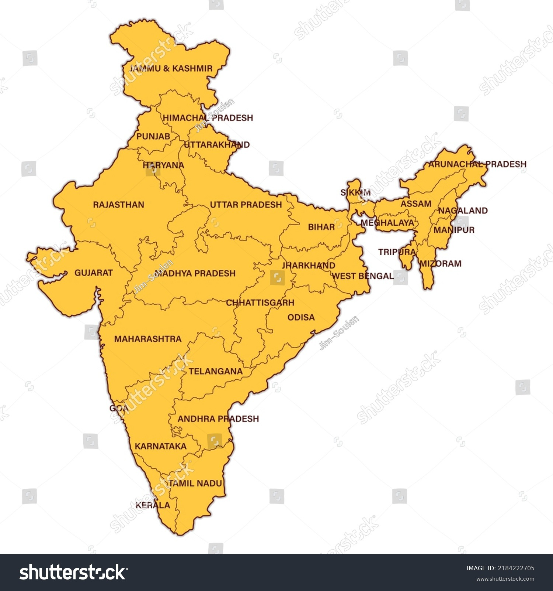

India is a land of diverse culture, history, and natural beauty. From the snow-capped Himalayas in the north to the tropical beaches in the south, the country offers many wonderful places for tourists. Click on different regions of the image below to learn more about some popular destinations.

How to use: Move your mouse over the image. Different parts of the map are clickable and will take you to information about that city.